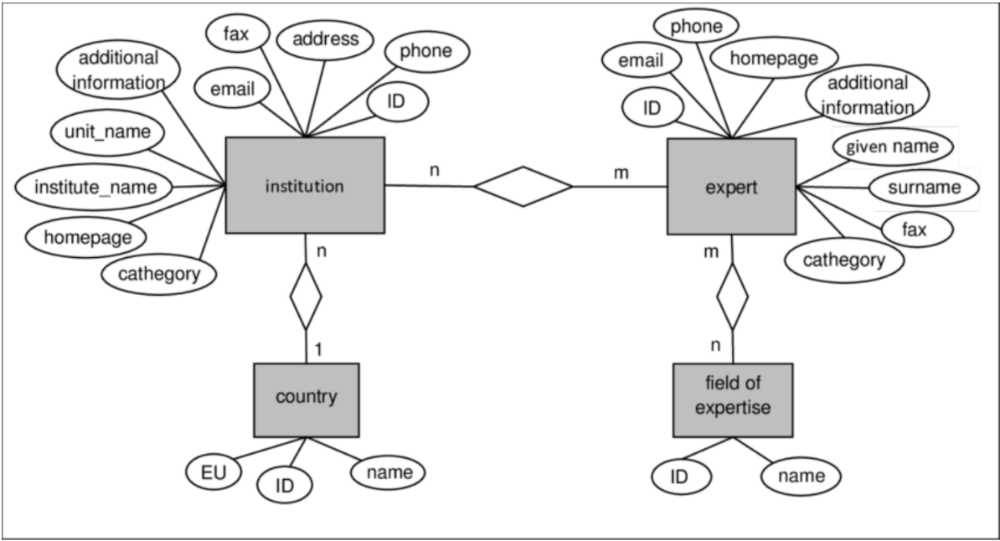

Flat Files
- problems:
- data integrity and redundancy
- difficult to enforce constraints on data
- sysadmin is a bottleneck
- lack of atomicity
- concurrent access
- security
Databases
- RDBMS - Relational DataBase Management System
- purpose of database:
- abstracts away how data is stored, maintained, and processed
- view, add, update, and delete data w/o data integrity
- a system that stores/indexes data through advanced data structures
- provides ONE single location for all data (although the data may be physically distributed over multiple nodes)
- centralized database - admin has al the power
- blockchain - all nodes in system cooperate to make sure database is consistent (helps w/ security)
- Git and blockchain both use merkle chains as underlying data structure
- Levels of Abstraction
- Physical
- how data is stored on the disk and accessed
- e.g. MySQL has 9 storage engines, while PostgreSQL has only 1
- Logical
- what data is stored, how it is represented, and what relationships exist between them
- essentially how to use database
- View
- highest level of abstraciton and refers to specific use cases
- e.g. the result of a complex SQL query for a specific problem
- schema - the overall design of a database
Data Models
- define how we design databases or interact with data
- implementation - database built with a specific model from the ground up and cannot be reconfigured to do anything else
- design mechanism - the way to describe/visualize database
- there are 8 major types
- Relational Model
- data stored as a relation
- rows are individual units called tuples
- columns are attributes common to all records
- Entity-Relationship (ER)
- 
- uses a collection of objects called entities and relationships among them
- not a database implementation, but rather used for database design
- good for visualization but can get cluttered if model is big
- Objecte-Oriented
- originally for implementation, now a design mech
- data treated as instances of classes
- ORM
- more rare
- Document (Semi-Structured)
- individual data objects may have different sets of attributes
- records may not share core set of attributes
- e.g. JSON and XML
- most are like NoSQL
- Network/Hierarchical/Graph
- predates all other models
- defines data records as nodes, and relationships between them as edges
- a notable NoSQL examples is neo4j
- Vector Database
- stores fixed-length numerical vectors
- each vector or group of vectors may have associated metadata
- indexed by metadata or nearest neighbor properties
- allows for fast retrieval of vectors that are nearby to each other
- con: not very human-readable
- Key-Value
- lookup is very fast
- data typically resides in RAM, not disk
- difference from document is that there is no structure
- Hybrids / Multi-Models
Database Languages
- two main semantic systems for working with databases
- data definition language (DDL)
- specifies a schema
- collection of attribute names and data types
- consistency contraints
- domain constraints - data type constraints
- referential integrity - foreign/primary key consistency
- assertions - business rules / policies coded into database
- authorization - who can do what
- storage structure and access methods (optional)
- data manipulation language (DML)
- procedural - user specifies what data is needed and how to get it
- declarative - user specifies what data is need but NOT how to get it (system figures it out)
- SQL is declarative
- since SQL is not procedural, it is not good at sequential compuatations, or any computation where the user specifies how to perform computation
- ETL - used when SQL is not enough
- Extract data from database using a database connection driver
- Transform the data (parse, reformat, aggregate, etc)
- Load data into new table using same driver
- query - an expression to retrieve or manipulate data
Data Storage and Querying
- databases have a storage manager that allows us to not worry about how underlying data is laid out
- most of data cannot fit into RAM, so it must be read efficiently from the disk (enabled by virtual memory)
- hashtable, BST, tries enable fast lookup
- query manager - the DML (i.e. SQL) statements organized into a query plan that consists of low-level instructions that the query evaluation engine understands to perform some operation on the data